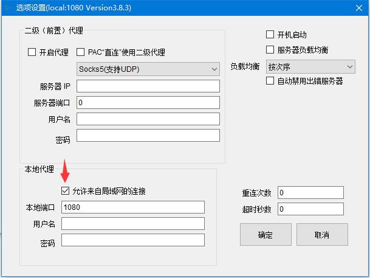
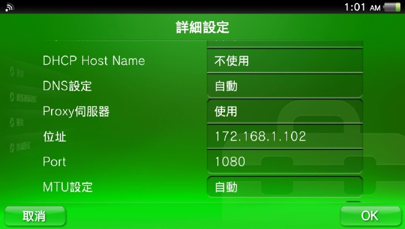
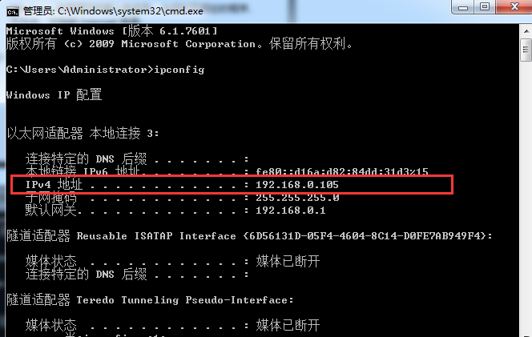

PSV/PS4/PS3使用教程上使用Shadowsocks教程

PS3/PS4
Step1.首先需要配置好电脑端的shadowsocks，并保证可以正常访问外网。
Step2.电脑端设置好后，右键托盘小飞机, 选择“选项设置”。

Step3.接下来在PSV上设定(PS3/PS4同理)。
进入WIFI详细设置后打开”Proxy服务器”

填写你电脑的内网IP地址, 如果不懂, 可以在开始菜单 – 运行 里输入CMD回车, 接下来输入ipconfig, 这样就知道了

接下来Port请写上1080
最后确认OK就行了
游戏机设置好代理之后就可以使用代理加速啦！可以游戏机浏览器访问ip.cn测试一下设置是否正确，如果显示正确就可以试试游戏去了～~♂
如果路由器支持，挂在路由器最方便
返回看其他教程
回主页